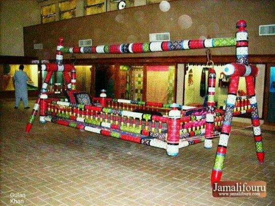
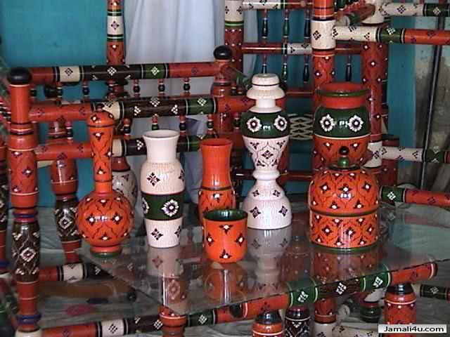

Famous Places in Matiari

Kirarki Masjid Matiari

Shrine of Shah Abdul Latif Bhittai

Shrine of Hazrat Makhdoom Sarwar Nooh (RA), he
was a great saint of his era. His roots connect with Islam

Minara Masjid Matiari
Sirhandi Graveyards, the historic necropolis of
Sindh prominent religious family is situated in Matiari town
The Dargah of Jeelani in the Peerano Kotar
Muhalla of Old Hala is associated with a great historical
significance
Odero Lal Temple Complex is more than a temple:
it is centuries old sanctuary for Hindus and Muslims
Tombs of Talpurs, Khudabad, near Hala was once
the capital of the Talpurs before they moved to Hyderabad,
Saeedabad Ancient Mosques, there are two ancient
mosques of identical shape (three domed), size and the age are
situated in new and the old Saeedabad localities

Saeedabad Monument (1928), hardly very few
architectural monuments of colonial period could have managed
their existence
Saeedabad Prison (1928)
Pir Jhando villages in Saeedabad taluka had been
one of the prominent and prestigious centres
Shrine of Sakhi Syed Hashim Shah Badshah

Shrine of Sakhi Syed Rakundin Shah Badshah